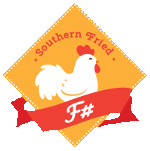

type Props =
{name: string;}
Full name: index.Props
{name: string;}
Full name: index.Props
Props.name: string
Multiple items
val string : value:'T -> string
Full name: Microsoft.FSharp.Core.Operators.string
--------------------
type string = System.String
Full name: Microsoft.FSharp.Core.string
val string : value:'T -> string
Full name: Microsoft.FSharp.Core.Operators.string
--------------------
type string = System.String
Full name: Microsoft.FSharp.Core.string
Multiple items
type FSComponent =
inherit obj
new : props:Props -> FSComponent
override render : unit -> 'a
Full name: index.FSComponent
--------------------
new : props:Props -> FSComponent
type FSComponent =
inherit obj
new : props:Props -> FSComponent
override render : unit -> 'a
Full name: index.FSComponent
--------------------
new : props:Props -> FSComponent
val props : Props
val self : FSComponent
type unit = Unit
Full name: Microsoft.FSharp.Core.unit
Full name: Microsoft.FSharp.Core.unit
override FSComponent.render : unit -> 'a
Full name: index.FSComponent.render
Full name: index.FSComponent.render
val sprintf : format:Printf.StringFormat<'T> -> 'T
Full name: Microsoft.FSharp.Core.ExtraTopLevelOperators.sprintf
Full name: Microsoft.FSharp.Core.ExtraTopLevelOperators.sprintf
type Model =
{image: string;
angle: float;}
Full name: index.Model
{image: string;
angle: float;}
Full name: index.Model
Model.image: string
Model.angle: float
Multiple items
val float : value:'T -> float (requires member op_Explicit)
Full name: Microsoft.FSharp.Core.Operators.float
--------------------
type float = System.Double
Full name: Microsoft.FSharp.Core.float
--------------------
type float<'Measure> = float
Full name: Microsoft.FSharp.Core.float<_>
val float : value:'T -> float (requires member op_Explicit)
Full name: Microsoft.FSharp.Core.Operators.float
--------------------
type float = System.Double
Full name: Microsoft.FSharp.Core.float
--------------------
type float<'Measure> = float
Full name: Microsoft.FSharp.Core.float<_>
type Msg =
| Left of float
| Right of float
| Reset
Full name: index.Msg
| Left of float
| Right of float
| Reset
Full name: index.Msg
union case Msg.Left: float -> Msg
union case Msg.Right: float -> Msg
union case Msg.Reset: Msg
val init : img:string option -> Model
Full name: index.init
Full name: index.init
val img : string option
val img : string
val defaultArg : arg:'T option -> defaultValue:'T -> 'T
Full name: Microsoft.FSharp.Core.Operators.defaultArg
Full name: Microsoft.FSharp.Core.Operators.defaultArg
val update : msg:Msg -> model:Model -> Model
Full name: index.update
Full name: index.update
val msg : Msg
val model : Model
val a : float
val view : model:Model -> dispatch:'a -> 'b
Full name: index.view
Full name: index.view
val dispatch : 'a
type 'T option = Option<'T>
Full name: Microsoft.FSharp.Core.option<_>
Full name: Microsoft.FSharp.Core.option<_>
val ImgSpinner : props:'a -> 'b
Full name: index.ImgSpinner
Full name: index.ImgSpinner
val props : 'a
Publish React Components with Fable
Eric Harding
@digitalsorcery
https://blog.digitalsorcery.net

First,
a little background...
What is React?
- Component based JavaScript view library
- Pioneer of the pure view function
What is F#?
What is Babel?
- Babel is a JavaScript to JavaScript compiler (Wait, what?)
- Lets you use new JavaScript syntax on older browsers

What is Fable?
Atwood's Law:
any application that can be written in JavaScript, will eventually be written in JavaScript.
What is Elmish?
What is NPM?
- The package manager for JavaScript
- npmjs.com is the repository
- Yarn is an alternative front end
OK, now what?
Oh, yea
Lets
Publish React Components with Fable
- Create a React component
- Test it (hopefully?)
- Publish it on NPM
But Why?
- Is this a good idea?
Full Participation
- Fable 1.0 was released in 2017
- Fable leverages JavaScript ecosystem to great effect
- Mostly a "read only" member of the larger JavaScript community
Try Before you Buy
- Elmish is amazing for green field work
- We don't always have that luxury
Low Risk
- Write a single component in F#
- Team doesn't even need Fable
The secret to building large apps is never to build large apps. - Justin Meyer
Spread F#
- Publish something useful.
- Wait for users to look at the source.
- Some will learn enough to contribute back.
But How?
I'm glad you asked.
React in F#
1: 2: 3: 4: 5: 6: 7: 8: 9: 10: |
|
- Props & State
- Component / PureComponent
- render()
- HTML DSL 👌
App.js
1: 2: 3: 4: 5: 6: 7: 8: 9: 10: |
|
Publish to NPM
- yarn build
-
yarn publish
- or - - npm run build
- npm publish
Consume from NPM
yarn add fs-react-sample-component
- or -
npm install --save fs-react-sample-component
- Peer dependency on React
For Development
1: 2: 3: 4: 5: 6: 7: |
|
- Automatic reload across both projects
How Much Overhead?
1: 2: 3: 4: 5: 6: 7: 8: 9: 10: 11: 12: 13: 14: 15: 16: 17: |
|
17 KiB before gzip
What About Elmish?
A Simple Elmish App
1: 2: 3: 4: 5: 6: 7: 8: |
|
...
1: 2: 3: 4: 5: 6: 7: 8: 9: 10: 11: 12: 13: 14: 15: 16: 17: 18: 19: |
|
An Adapter
1: 2: 3: 4: 5: 6: |
|
- React and MVU 🤗
Adapter.fs
1: 2: 3: 4: 5: 6: 7: 8: 9: 10: 11: 12: 13: 14: 15: |
|
Demo
Word of Warning
- This is not a well trodden path (yet)
- There may be bumps 🤜🤛
- The community is very helpful
- Find me on F# Slack